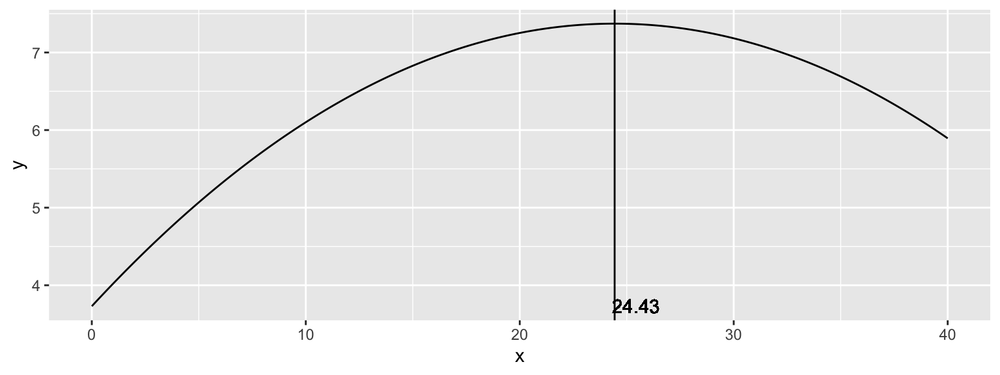

ME715 - Econometria
Modelo de Regressão Linear II
Prof. Carlos Trucíos
ctrucios@unicamp.br
ctrucios@unicamp.br
Instituto de Matemática, Estatística e Computação Científica (IMECC),
Universidade Estadual de Campinas (UNICAMP).
Outras propriedades
Outras propriedades
Hipóteses do modelo
Note
- HRLM1: O modelo populacional é linear nos parâmetros, \(Y = \beta_0 + \beta_1 X_1 + \beta_2 X_2 + \ldots + \beta_k X_k + u\) (equivalentemete, em forma matrcial, \(Y = \textbf{X} \beta + \textbf{u}\)).
- HRLM2: \((Y_1, X_{1,1}, \ldots, X_{1,k}), \cdots, (Y_n, X_{n,1}, \ldots, X_{n,k})\) constituem uma a.a. de tamanho \(n\) do modelo populacional.
- HRLM3: Não existe colinearidade perfeita entre as variáveis independentes e nenhuma das variáveis independentes é constante.
- HRLM4: \(\mathbb{E}(\textbf{u}|\textbf{X}) = 0\)
- HRLM5: Os erros tem variância constante (homocedasticidade), \(\mathbb{V}(\textbf{u}|\textbf{X}) = \sigma^2 \textbf{I}\)
Além ds hipóteses já vistas, a seguente hipótese é algumas vezes também utilizada.
HRLM1–HRLM6 são conhecidas como as hipóteses do modelo linear clássico.
Outras propriedades
Sob HRLM1–HRLM6, condicional em \(\textbf{X}\):
\[\hat{\beta} - \beta \sim N(0, \sigma^2 (X'X)^{-1}),\]
\[\dfrac{(n-k-1)s^2}{\sigma^2}\sim \chi^2_{n-k-1},\]
\[\dfrac{\hat{\beta}_j - \beta_j}{\sqrt{\widehat{\mathbb{V}}(\hat{\beta}_j|X)}} \sim t_{n-k-1},\]
em que \(s^2 = \dfrac{\hat{u}' \hat{u}}{n-k-1}\) e \(\widehat{\mathbb{V}}(\hat{\beta}|X) = s^2 (X'X)^{-1}.\)
Propriedades Assintóticas do EMQO
Propriedades Assintóticas do EMQO
Teoria assintótica nos permite relaxar algumas suposições do modelo necessárias para obter a distribuição amostral dos estimador desde que o tamanho amostral seja suficientemente grande.
Distribuições amostrais são importantes pois nos permitem obter intervalos de confiança e realizar testes de hipóteses sobre \(\beta\).
Duas propriedades interessante são:
\[\hat{\beta} \rightarrow_p \beta \quad e\] \[\hat{\beta} - \beta \rightarrow_d N(0, \sigma^2 (X'X)^{-1})\]
Propriedades Assintóticas do EMQO
Para ilustrar a primeira propriedade, pense no seguinte DGP.
Propriedades Assintóticas do EMQO
Propriedades Assintóticas do EMQO
Para ilustrar a segunda, pense no seguinte:
Code
library(ggplot2)
library(tidyr)
n <- 100
mc <- 100000
b0 <- 1
b1 <- 0.7
b_hat <- matrix(NA, ncol = 2, nrow = mc)
x <- rnorm(n, 4, 1)
for (i in 1:mc) {
u <- rnorm(n)
y <- b0 + b1*x + u
b_hat[i, 1] <- as.numeric(coef(lm(y~x)))[2]
}
X <- matrix(c(rep(1, n), x), n, 2)
b_hat[, 2] <- rnorm(mc, 0.7, sqrt(solve(t(X) %*% X)[2,2]))
colnames(b_hat) <- c("beta_hat", "normal")
b_hat <- b_hat |> data.frame() |> pivot_longer(cols = everything(), names_to = "betas", values_to = "values")
ggplot(b_hat, aes(x = values, group = betas, color = betas)) + geom_density()Propriedades Assintóticas do EMQO
- O que é de se esperar se utilizarmos \(n = 25\)?
- O que é de se esperar se utilizarmos \(n = 1000\)?
- O que é de se esperar se utilizarmos \(n = 25\) e \(u = \dfrac{v-1}{\sqrt{2}}\), em que \(v \sim X^2_1\)?
- O que é de se esperar se utilizarmos \(n = 100\) e \(u = \dfrac{v-1}{\sqrt{2}}\), em que \(v \sim X^2_1\)?
- O que é de se esperar se utilizarmos \(n = 1000\) e \(u = \dfrac{v-1}{\sqrt{2}}\), em que \(v \sim X^2_1\)?
Propriedades Assintóticas do EMQO
- HRLM1–HRLM6 garante que a distribuição de \(\beta\) seja normalmente distribuida (independente do tamanho amostral).
- A convergência em distribuição (teoria assintótica) nos diz que, mesmo que \(u\) não tenha uma distirbuição normal, \(\beta\) será normalmente distribuida desde que o tamanho amostral seja grande.
Unidades de medida
Unidades de medida
Se a variável independente for dividida/multiplicada por uma constante \(c \neq 0\), então o \(\hat{\beta}\) associado a essa variável será multiplicado ou dividido por \(c\).
Unidades de medida
Mudar as unidades de medida da variável independente, não muda \(\hat{\beta}_0\).
Unidades de medida
Mudanças de unidade de medida não alteram o \(R^2\) (a qualidade de ajuste do modelo não depende das unidades de medida).
Call:
lm(formula = y ~ x)
Residuals:
Min 1Q Median 3Q Max
-3.1844 -0.5727 -0.0363 0.6700 1.9335
Coefficients:
Estimate Std. Error t value Pr(>|t|)
(Intercept) 1.48643 0.09832 15.12 <2e-16 ***
x 1.09101 0.09510 11.47 <2e-16 ***
---
Signif. codes: 0 '***' 0.001 '**' 0.01 '*' 0.05 '.' 0.1 ' ' 1
Residual standard error: 0.9825 on 98 degrees of freedom
Multiple R-squared: 0.5732, Adjusted R-squared: 0.5688
F-statistic: 131.6 on 1 and 98 DF, p-value: < 2.2e-16
Call:
lm(formula = y ~ x_n)
Residuals:
Min 1Q Median 3Q Max
-3.1844 -0.5727 -0.0363 0.6700 1.9335
Coefficients:
Estimate Std. Error t value Pr(>|t|)
(Intercept) 1.48643 0.09832 15.12 <2e-16 ***
x_n 5.45504 0.47549 11.47 <2e-16 ***
---
Signif. codes: 0 '***' 0.001 '**' 0.01 '*' 0.05 '.' 0.1 ' ' 1
Residual standard error: 0.9825 on 98 degrees of freedom
Multiple R-squared: 0.5732, Adjusted R-squared: 0.5688
F-statistic: 131.6 on 1 and 98 DF, p-value: < 2.2e-16Unidades de medida
Quando mudamos as unidades de medida da variável (seja esta independente ou dependente) quando ela aparece em escala logaritmica, nada acontece com a inclinação mas o intercepto muda.
Não linearidades
Não linearidades
- Em geral, relações lineares não são suficientes para todas as aplicações.
- Duas opções simmples para incluir não linearidades são: (a) aplicar \(\log(\cdot)\), (b) incluir termos polinomiais.
- Em termos de estimação, nada muda. Contudo, devemos nos atentar à interpretação do modelo.
Não linearidades
Transformação logaritmica
- A transformação pode linearizar a variável
- Gera um modelo com (aproximadamente) um efeito percentual constante \(\log(y) = \beta_0 + \beta_1 x + u\)
- \(\Delta \log(y) = \log(y_1) - \log(y_0) \approx (y_1-y_0)/y_0 = \Delta y/y_0\), então \[100 \times \Delta \log(y) \approx \% \Delta y\]
- Logo, se \(\Delta u = 0\), temos que \[\% \Delta y \approx 100 \times \Delta \log(y) = (100 \beta_1) \Delta x\]
Não linearidades
| Modelo | V. Dependente | V. Independente | Interpretação \(\beta_1\) |
|---|---|---|---|
| Nível-Nível | \(y\) | \(x\) | \(\Delta y = \beta_1 \Delta x\) |
| Nível-Log | \(y\) | \(\log(x)\) | \(\Delta y = \big(\beta_1/100 \big) \% \Delta x\) |
| Log-Nível | \(\log(y)\) | \(x\) | \(\% \Delta y = 100\beta_1 \Delta x\) |
| Log-Log | \(\log(y)\) | \(\log(x)\) | \(\% \Delta y = \beta_1 \% \Delta x\) |
Não linearidades
Exemplo: O dataset wage1 do pacote wooldridge contém informação de 526 pessoas. A variável wage é o salário médio por hora e a variável educ são os anos de educação formal.
Ajustando um modelo RLS \[\log(wage) = \beta_0 + \beta_1 educ + u\], obtemos:
(Intercept) educ
0.58377267 0.08274437 Qual interpretação é correta?
- A cada ano adicional de educação, o salário médio por hora aumenta em \(\approx\) 0.0827 USD
- A cada ano adicional de educação, o salário médio por hora aumenta em \(\approx\) 8.27%
Não linearidades
Exemplo: O dataset hprice2 do pacote wooldridge contém informação de 506 comunidades na área de Boston nos Estados Unidos. As variáveis price, nox, rooms, dist e stratio representam o preço médio das casas, quantidade de óxido nitroso no ar, número médio de cômodos nas casas da comunidade, distância média ponderada da comunidade em relação às cinco centrais de emprego e a razão média estudante-professor nas escolas da comunidade. Se ajustarmos o modelo \[\log(price) = \beta_0 + \beta_1 \log(nox) + \beta_2 rooms + \beta_3 \log(dist) + \beta_4 stratio + u\], obtemos:
(Intercept) log(nox) rooms
9.2337378 -0.7176735 0.3059183 Como interpretaria \(\hat{\beta}_1\)?
A cada aumento de 1% na quantidade de óxido nitroso no ar, o preço médio da casa diminui em \(\approx\) 0.72 %.
Não linearidades
Exemplo: O dataset MEAP93 do pacote wooldridge contém informação de 408.
Se ajustarmos o modelo \[math10 = \beta_0 + \beta_1 \log(expend) + \beta_2lnchprg + u,\] obtemos:
(Intercept) log(expend) lnchprg
-20.3608165 6.2296983 -0.3045853 Qual a interpretação de \(\hat{\beta}_1\)?
Quando expend aumenta em 1%, math10 aumenta em \(\approx\) 0.063 (\(\hat{\beta}_1/100\)).
Não linearidades
Muitas vezes, para tentar capturar não-linearidades, podemos estar interessados em incluir, por exemplo \(X_k^2\), \(X_k^3\) …, \[Y = \beta_0 + \beta_1 X_1 + \beta_2 X_1^2 + \beta_3 X_2 + \beta_4X_3 + \beta_5X_4+u\]
No contexto de MRLM podemos incluir termos polinomiais. O processo de estimação continua sendo o mesmo mas devemos ter muito cuidado na interpretação.
Por exemplo, pense no seguinte modelo
\[\begin{equation}\label{quadratica} \hat{Y} = \hat{\beta}_0 + \hat{\beta}_1X + \hat{\beta}_2X^2 \end{equation}\]
- Se estivermos interessados unicamente em predição, não há maiores complicações.
- Se estivermos interessados em conhecer o efeito de \(X\) sobre \(Y\) precisamos interpretar o modelo.
Não linearidades
Se ajustarmos o seguinte modelo
\[wage = \beta_0 + \beta_1 exper + \beta_2 exper^2 + u,\]
obtemos:
(Intercept) exper I(exper^2)
3.725405759 0.298100104 -0.006129887 O que acha da seguinte interpretação?
Se exper aumenta em uma unidade, wage aumenta em 0.29 (mantendo todos os outros fatores fixos).
Como podemos manter \(exper^2\) fixo se \(exper\) está aumentando?
A correta interpretação precisa ser muito mais cuidadosa.
Não linearidades
\[\hat{y} = \hat{\beta}_0 + \hat{\beta}_1x + \hat{\beta}_2x^2\]
Derivando w.r.t \(X\), temos que \(\dfrac{d\hat{y}}{dx} = (\hat{\beta}_1 + 2 \hat{\beta}_2x)\), então \[\dfrac{\Delta \hat{y}}{ \Delta x} \approx (\hat{\beta}_1 + 2 \hat{\beta}_2x)\]
- Se \(x=0\), \(\dfrac{\Delta \hat{y}}{ \Delta x} \approx \hat{\beta}_1\), \(\hat{\beta}_1\) pode ser interpretado como a inclinação aproximada na alteração de \(x=0\) para \(x=1\)
- Para \(x>0\), \(2 \hat{\beta}_2x\) deve ser considerado na interpretação
Não linearidades
(Intercept) exper I(exper^2)
3.725405759 0.298100104 -0.006129887 Como varia wage em função de exper? \[\Delta \hat{y} \approx (0.2981 - 2 \times 0.0061x) \Delta x\]
- O primeiro ano a experiência vale 0.2981 USD por hora
- Depois do primeiro ano, o efeito de experiência começa a cair:
- Para o segundo ano: \(0.2981 - 2 \times 0.0061(1) = 0.2859\)
- Para o terceiro ano: \(0.2981 - 2 \times 0.0061(2) = 0.2737\)
- Para o decimo ano: \(0.2981 - 2 \times 0.0061(9) = 0.1883\)
- Note que o ponto de infleção é \(x* = - \hat{\beta}_1 / 2 \hat{\beta}_2\), no nosso caso \(x* = 0.2981/(2 \times 0.0061) = 24.43\)
Não linearidades
\[\hat{y} = 3.73 + 0.2981 x - 0.0061 x^2\]
Não linearidades
O que significa esse 24.43 anos?
- Se na amostra, apenas uma pequena fração dos dados apresentam exper > 24.43, não devemos nos preocupar.
O que pode estar acontecendo?
- É possivel que o retorno de exper sobre wage seja negativo a partir de algum ponto, mas cuidado com as variáveis omitidas! (levam a estimadores viesados).
Qualidade de ajuste
R2
\[\underbrace{\displaystyle \sum_{i=1}^n (y_i - \bar{y})^n}_{SQT} = \underbrace{\sum_{i=1}^n (\hat{y}_i - \bar{y})^2}_{SQE} + \underbrace{\sum_{i=1}^n \hat{u}_i^2}_{SQR}\]
\[R^2 = 1- SQR/SQT = SQE/SQT\]
- \(R^2:\) proporção da variabilidade de \(y\) que é explicada pelo modelo.
- \(100 \times R^2:\) porcentagem da variabilidade de \(y\) que é explicada pelo modelo.
R2
Code
modelo1 = lm(log(wage)~educ,data = wage1)
modelo2 = lm(log(wage)~educ+exper,data = wage1)
modelo3 = lm(log(wage)~educ+exper+tenure,data = wage1)
modelo4 = lm(log(wage)~educ+exper+tenure+nonwhite,data = wage1)
modelo5 = lm(log(wage)~educ+exper+tenure+nonwhite
+female,data = wage1)
modelo6 = lm(log(wage)~educ+exper+tenure+nonwhite
+female + married,data = wage1)
modelo7 = lm(log(wage)~educ+exper+tenure+nonwhite+female
+married+numdep,data = wage1)R2
Code
modelo = 1:7
R2 = c(summary(modelo1)$r.squared, summary(modelo2)$r.squared,
summary(modelo3)$r.squared, summary(modelo4)$r.squared,
summary(modelo5)$r.squared, summary(modelo6)$r.squared,
summary(modelo7)$r.squared)
dados = data.frame(R2, modelo)
library(ggplot2)
ggplot(dados, aes(y = R2, x = modelo)) + geom_line() + geom_point() R2
- Não é uma conincidencia que \(R^2\) nunca tenha diminuido. De fato, \(R^2\) tem a desvantagem que nunca diminui quando incluimos uma nova variavel no modelo (mesmo se a variável não for importante)
- Uma alternativa é usar uma nova medida de qualidade de ajuste.
\[R^2_{Adj} = 1 - \dfrac{n-1}{n-(k+1)} (1-R^2)\]
\(R^2_{Adj}\) penaliza o número de variáveis incluidas no modelo.
R2 ajustado
Code
modelo = 1:7
R2adj = c(summary(modelo1)$adj.r.squared, summary(modelo2)$adj.r.squared,
summary(modelo3)$adj.r.squared, summary(modelo4)$adj.r.squared,
summary(modelo5)$adj.r.squared, summary(modelo6)$adj.r.squared,
summary(modelo7)$adj.r.squared)
dados = data.frame(R2adj, modelo)
library(ggplot2)
ggplot(dados, aes(y = R2adj, x = modelo)) + geom_line() +
geom_point() + ylab("R2 ajustado")R2 ajustado
Comparando \(R^2\) com \(R^2-\)ajustado
[1] 0.1858 0.2493 0.3160 0.3160 0.3923 0.4036 0.4036[1] 0.1843 0.2465 0.3121 0.3108 0.3865 0.3967 0.3956\[R^2_{Adj} = 1 - \dfrac{n-1}{n-(k+1)}(1-R^2) = 1 - \dfrac{\hat{s}^2}{\tilde{\sigma}_y^2},\] em que \(\hat{s}^2\) e \(\tilde{\sigma}_y^2\) são estimadores não viesados para \(\sigma^2\) e \(\sigma_y^2\)
Qualidade de ajuste

Carlos Trucíos (IMECC/UNICAMP) | ME715 - Econometria | ctruciosm.github.io